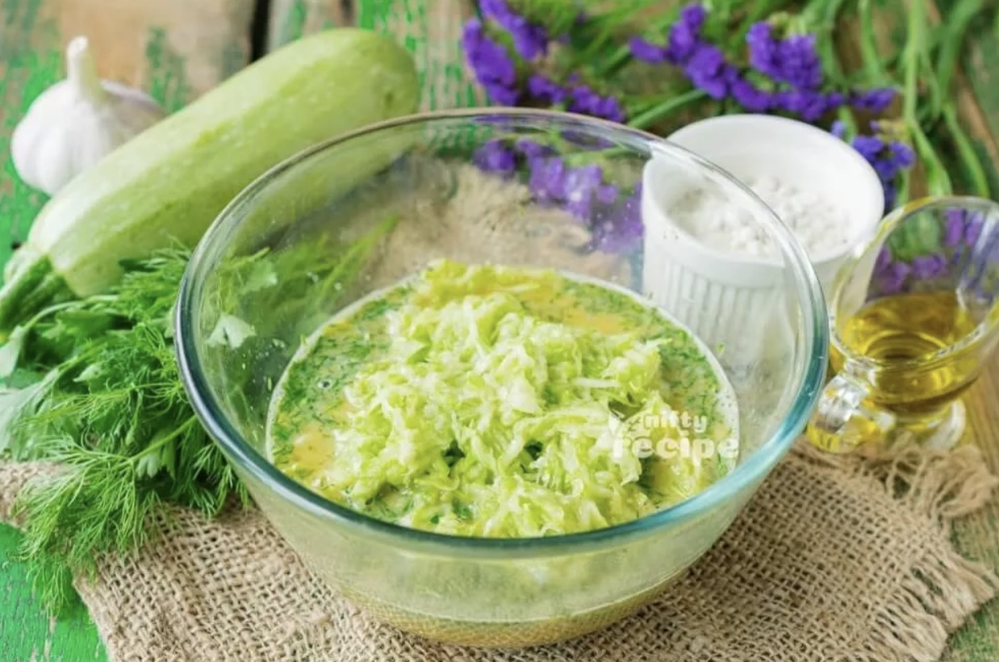
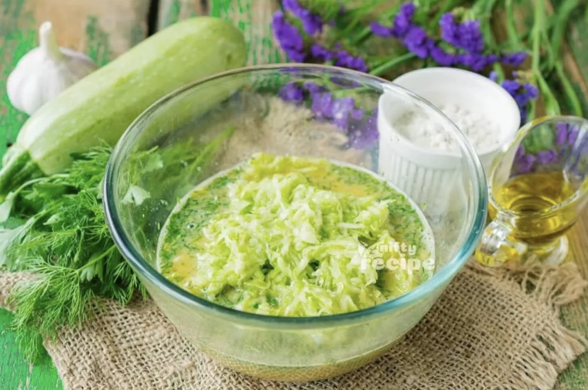

Recipes
Zucchini Fritter
Origin: Unknown
Source: niftyrecipe.com
Category: Side dish/main dish

I found this recipe for zucchini fritters on a food blog when I was looking for quick and easy dishes to make during undergrad. It uses minimal ingredients and can be done in less than half an hour. They are delicious and filling and go great with dipping sauces.
Recipe Ingredients
- Zucchini
- Egg
- flour
- vegetable seed oil
- garlic
- salt and pepper
Recipe Steps
- Combine eggs, salt, and pepper and whisk
- Add pressed garlic
- Grate the zucchini and squeeze the moisture out of it
- Add zucchini and flour and mix
- Heat oil in pan and add dollops of batter
- Serve with or without dipping sauce
Photo Gallery

 

Chinese Jiaozi
Origin: China
Source: flour, pork and cabbage
Category: Main Dish

Chinese dumplings (Jiaozi, 饺子) are stuffed parcels made of unleavened dough and savory fillings consisting of minced ingredients like meat, egg, tofu, or vegetables. They can be boiled, pan-fried or steamed.
Recipe Ingredients
- flour
- water
- pork
- cabbage
Recipe Steps
- Dough
- Filling
- Folding
- Cooking
- Dipping
Photo Gallery


BLAT
Origin: American
Source: My recipe
Category: Main Dish

A BLAT sandwich is a delicious twist on the classic BLT, featuring crispy bacon, fresh lettuce, ripe tomatoes, and creamy avocado, all sandwiched between slices of bread for a satisfying blend of flavors and textures.
Recipe Ingredients
- bacon
- lettuce
- avocado
- tomato
- bread
- mayo
Recipe Steps
- Toasted bread slice spread with mayo
- Put sliced avocado, bacons, sliced tomatoes, lettuce on one spread of bread
- Put the other slice of bread at the top
Photo Gallery